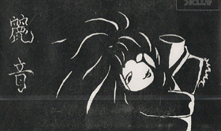
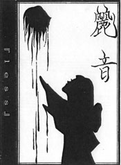
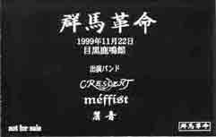
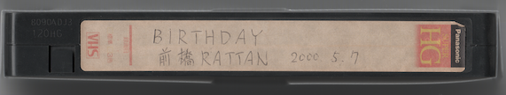
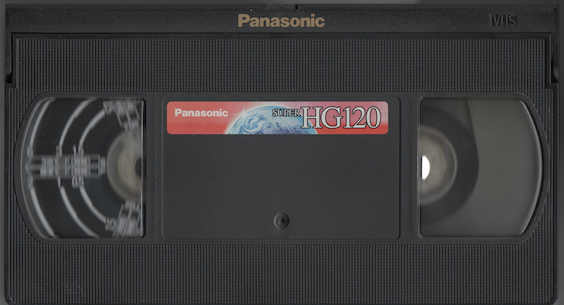
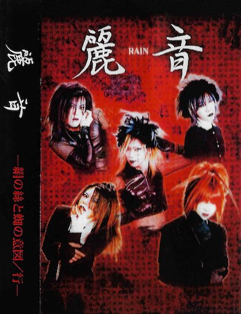
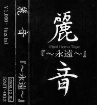

麗音の音源
DEMO TAPE 「~for~」
収録曲
- ~for~
- 人形
歌詞
NOTE: 瞬時加入前の音源
DEMO TAPE 「妖艶」
Release: 1997.XX.XX
収録曲
- su.i.cide
- クライズ
- 光の影
- Dead or Alive
- 妖艶
DEMO TAPE 「レプリカ」

Release: 1998.XX.XX
収録曲
- レプリカ
- 進化の瞬間
OMNIBUS CD 「神々の黄昏 Vol.2」
Release: 1999.XX.XX
Songs
- Lilie / S'aLateal
- 輪廻 / Raffia di:ser
- pain / mazohystant[E]-goist
- 無限 / NOIZ
- PLATONIC / PARANOIA
- Lastkiss Bluemoon / LAXIS
- less / 麗音
- Lonely Night / SECIR
- パラノイア / Guilty Kreuz
- 衝撃 / THE CRACKTRIGGER
- mercy... / Rustless mind
- Eternal rise / Flare
- DIS / DI/PROGRAM
NOTE: 栃木会館公演にて無料配布。
DEMO TAPE 「less」

Release: 1999.XX.XX
収録曲
- less ~ winter call version ~
歌詞
NOTE: 群馬のライブハウスでの公演にて一度だけ無料配布。lessは「神々の黄昏 Vol.2」と同一内容。
OMNIBUS DEMO TAPE 「群馬革命」

Release: 1999.11.22
収録曲
- S / méffist
- レプリカ / 麗音
- crime of mind / CRESCENT
歌詞
OMNIBUS VIDEO TAPE 「BIRTHDAY 前橋RATTAN 2000.5.7」


Release: 2000's Summer
収録内容
- メイク中インタビュー (TANATOS, Chillkey Labemds, LAWINE, 麗音, méffist)
- TANATOSのライブ (1曲)
- LAWINEのライブ (催眠, LUST [TYPE M])
- Chillkey Labemdsのライブ (JORKER (X JAPANカバー) など全2曲)
- 麗音のライブ (行 (イントロのみ), 妖艶)
- méffistのライブ (Sなど)
OMNIBUS DEMO TAPE
Release: 2000.06.10
NOTE: 2000年6月10日神楽坂DIMENSION公演で無料配布されたデモテープ。収録曲不明。「ga.ラ.ku.タ.ba.コ」が収録されてるかも？
DEMO TAPE 「絹の絲と蜘の意図」

Release: 2000.07.29
収録曲
- 絹の絲と蜘の意図
- 行
歌詞
DEMO TAPE 「永遠」

Release: 2000.12.05
収録曲
- 隷
- su.i.cide
- eternal season
歌詞
文有希トリビュートアルバム 「to SILENCE」
Release: 2003.08.22
収録曲
- never ending…
- 進化の瞬間 / méffist
- 隷−しもべ− / CRESCENT
- less / 蜘蛛
- 「RAIN」〜麗しい音〜 / 麗音
歌詞 (PDF)
戻る
{kind=link}
{kind=link}
{kind=link}
{kind=link}
{kind=link}
{kind=link}
{kind=link}
{kind=link}
{kind=link}
{kind=link}